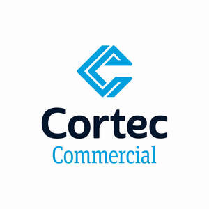

Trade Mark Journal No.2025/030 25 July 2025
UK00004234558 16 July 2025 (37,42)
Mark 1

Mark 2
Mark 3
Mark 4
- Class 37
- Construction; Building construction; Scaffolding construction; Building, construction and demolition; Construction of buildings; Buildings (Construction of -); Industrial construction; Infrastructure construction; Residential construction; Building construction supervision; Supervision (Building construction -); Supervision of building construction; Pipeline construction; Insulation construction; Building construction and demolition services; Construction of tunnels; Construction supervision of buildings; Construction of bridges; Erection of formwork for building and construction; Building construction and repair; Construction of pipelines; Construction of dams; Commercial construction; Construction of railways; Construction of property; Construction of factories; Supervision of construction; Construction supervision; Building construction consultancy; Construction of roads; Building and construction services; Building construction services; Pier construction; Pipeline construction and maintenance; Custom building construction; Road construction; Erection of scaffolding for building and construction; Factory construction; Underwater building and construction; Offshore construction; Construction of walls; Construction of houses; Buildings (Waterproofing of -) during construction; Onshore construction; Construction of chimneys; Custom construction of buildings; Construction of carriageways; Construction of greenhouses; Construction consultancy; Construction of floors; Construction services; Underground construction; Heavy engineering construction; Erection of scaffolding for civil engineering construction; Construction of manufacturing and industrial buildings; Erection of formwork for civil engineering construction; Construction of buildings and other structures; Construction of kitchens; Construction of motorways; Building construction supervision services for building projects; Underwater construction; Construction of steel structures for buildings; Services for the construction of buildings; Construction of piles; Hiring of construction machinery; Harbour construction; Rental of building construction machinery; Consultation in building construction supervision; Buildings (Insulation of -) during construction; Insulation of buildings during construction; Marine construction; Steel structure construction works; Buildings (Supervision during construction of -); Construction of foundations for buildings; Development of land [construction]; Construction consultation; Construction of ceilings; Buildings (Damp-proofing of -) during construction; Site preparation [construction]; Street construction; Rail infrastructure construction; Construction of healthcare buildings; Construction of partitioning; Hydro-electric factory construction; Construction of sunrooms; Construction of hydroelectric factories; Sealing of buildings during construction; Buildings (Sealing of -) during construction; Sign construction; Custom construction of bridges; Buildings (Fire-proofing of -) during construction; Construction of partitions; Civil infrastructure construction; Construction of ramparts; Building inspection [in the course of building construction]; Construction supervision of civil engineering projects; Custom construction of roads; Residential and commercial building construction; Construction of foundations for roads; Construction of institutional buildings; Construction of steel fabrications; General building construction services; Construction of cubicles; Construction of educational buildings; Construction of airports; Fireproofing during construction; Construction of multihome buildings; Damp-proofing during construction; Construction of foundations for dams; Scenery construction; Construction of ports; Consultancy relating to residential and building construction; Hiring of construction equipment; Custom construction of factories; Civil engineering construction; Custom construction of motorways; Rental of construction machinery; Construction of railway roadbeds; Construction of stables; Aviation infrastructure construction.
- Class 42
- Construction design; Construction draughting; Draughting (Construction -); Construction drafting; Drafting (Construction -); Development of construction projects.
David Rose